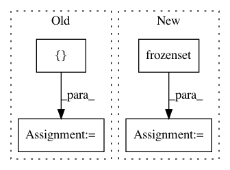

7e243fb2e89754f14e29ae28cff4efa76b40ad5e,hmmlearn/hmm.py,,,#,23
Before Change
"GaussianHMM",
"MultinomialHMM"]
COVARIANCE_TYPES = ["spherical", "tied", "diag", "full"]
class GaussianHMM(_BaseHMM):
Hidden Markov Model with Gaussian emissions.
After Change
__all__ = ["GMMHMM", "GaussianHMM", "MultinomialHMM"]
COVARIANCE_TYPES = frozenset(("spherical", "diag", "full", "tied"))
class GaussianHMM(_BaseHMM):
Hidden Markov Model with Gaussian emissions.
In pattern: SUPERPATTERN
Frequency: 6
Non-data size: 4
Instances
Project Name: hmmlearn/hmmlearn
Commit Name: 7e243fb2e89754f14e29ae28cff4efa76b40ad5e
Time: 2015-12-11
Author: superbobry@gmail.com
File Name: hmmlearn/hmm.py
Class Name:
Method Name:
Project Name: stanford-mast/nn_dataflow
Commit Name: feb0cf1b21e3536c9ecddaa64db8ba12055179b3
Time: 2018-07-25
Author: mgao12@stanford.edu
File Name: nn_dataflow/tests/partition_test/test_unit_nhops_to_proc_region.py
Class Name: TestUnitNhopsToProcRegion
Method Name: test_lr_layer
Project Name: dit/dit
Commit Name: 146f5ddd1ac881fbebdeff83c0be0322bf7e1d74
Time: 2013-09-27
Author: chebee7i@gmail.com
File Name: dit/math/sigmaalgebra.py
Class Name:
Method Name: sets2matrix
Project Name: biocore/scikit-bio
Commit Name: 91701dae31f22bbea9e6d6ab9c4d84a1cf7b23be
Time: 2016-06-02
Author: kestrel.gorlick@gmail.com
File Name: skbio/io/format/stockholm.py
Class Name:
Method Name:
Project Name: dit/dit
Commit Name: 146f5ddd1ac881fbebdeff83c0be0322bf7e1d74
Time: 2013-09-27
Author: chebee7i@gmail.com
File Name: dit/math/sigmaalgebra.py
Class Name:
Method Name: is_sigma_algebra__brute
Project Name: stanford-mast/nn_dataflow
Commit Name: feb0cf1b21e3536c9ecddaa64db8ba12055179b3
Time: 2018-07-25
Author: mgao12@stanford.edu
File Name: nn_dataflow/tests/partition_test/test_unit_nhops_to_proc_region.py
Class Name: TestUnitNhopsToProcRegion
Method Name: test_pool_layer